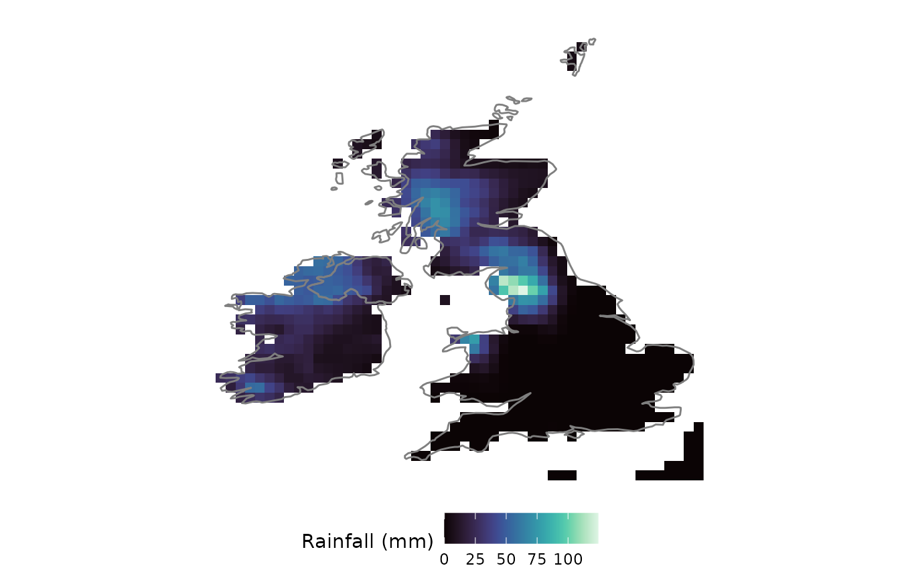
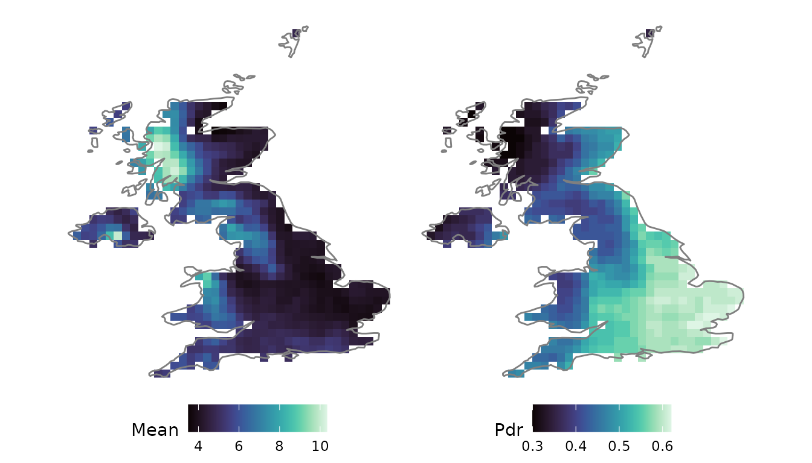
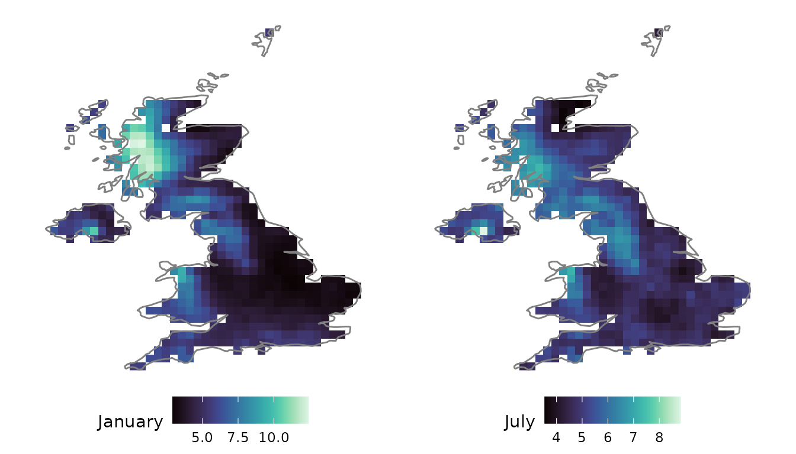
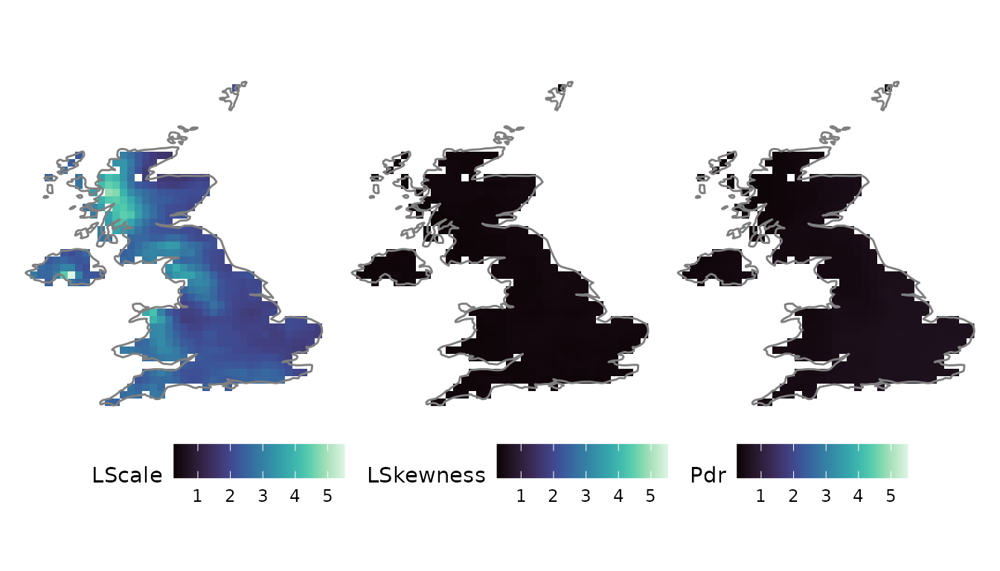
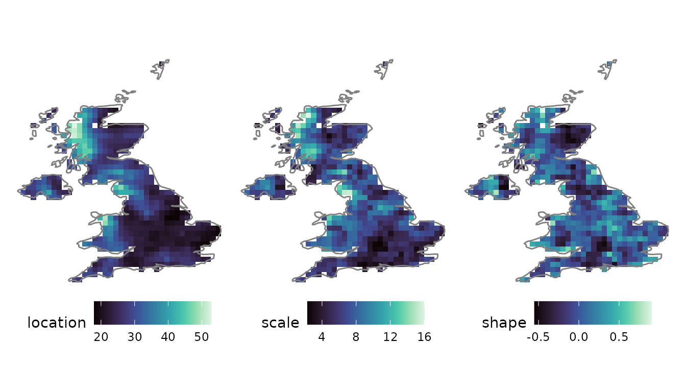

Gridded workflow and visualization
Source:vignettes/articles/gridded-workflow.Rmd
gridded-workflow.Rmd1. The gridded pipeline
anyFit follows a load → process → visualize
paradigm. This article follows the gridded branch of that pipeline end
to end on the bundled E-OBS daily rainfall file, and closes with an
extreme-value analysis. Throughout, the data reside in a single
sxts object (see vignette("sxts-class")).
f <- system.file("extdata", "rr_ens_mean_0.25deg_reg_2011-2022_v27.0e.nc",
package = "anyFit")
uk_name <- "U.K. of Great Britain and Northern Ireland"2. Load: reading and clipping NetCDF
nc2xts() reads a NetCDF variable directly and returns an
sxts. It can clip the data while reading,
reading only the requested spatial hyperslab from disk, via any of four
options:
-
country =: a country name fromworld_data$name; -
continent =: a continent name (e.g."Europe"); -
xlim =/ylim =: a bounding box; -
shapefile =: a path to a shapefile.
Here we read a bounding box over the British Isles and map a single wet winter day. Because the result is a ggplot, we overlay the coastline with standard ggplot2 syntax.
brit <- nc2xts(f, varname = "rr", xlim = c(-11, 2), ylim = c(49.5, 61))
nc_ggplot(brit["2015-12-05"], legend.title = "Rainfall (mm)",
viridis.option = "mako") &
borders("world", regions = c("UK", "Ireland"))
For the analysis that follows we clip to the UK by name.
rain_uk <- nc2xts(f, varname = "rr", country = uk_name)3. Process: temporal aggregation
period_apply_nc() aggregates a gridded sxts
over a chosen temporal scale while preserving the spatial metadata. The
aggregation function is user-specified: "sum" for rainfall
totals, "mean" for a variable such as temperature, or
"max" to extract block extremes. Here we form annual
totals.
annual_uk <- period_apply_nc(rain_uk, period = "years", FUN = "sum")
c(years = nrow(annual_uk), cells = elements(annual_uk))
#> years cells
#> 12 5444. Process: gridded statistics
basic_stats_nc() computes a panel of summary statistics
at every cell (moments, L-moments, quantiles and intermittency measures)
and returns a multi-layer raster. We map mean wet-day rainfall alongside
the probability dry.
gstats <- basic_stats_nc(rain_uk, ignore_zeros = TRUE)
nc_ggplot(gstats[[c("Mean", "Pdr")]], viridis.option = "mako") &
borders("world", regions = "UK")
For seasonal structure, monthly_stats_nc() computes the
same statistics separately for each calendar month.
Contrasting January with July shows the seasonal variation in mean
wet-day rainfall.
mstats <- monthly_stats_nc(rain_uk, ignore_zeros = TRUE)
p_jan <- nc_ggplot(mstats$January[["Mean"]], legend.title = "January",
viridis.option = "mako")
p_jul <- nc_ggplot(mstats$July[["Mean"]], legend.title = "July",
viridis.option = "mako")
(p_jan | p_jul) & borders("world", regions = "UK")
5. Visualize: customising nc_ggplot()
Every map is a native ggplot object, so it can be customised with the
full ggplot2 and patchwork vocabulary. nc_ggplot() itself
provides several conveniences: a viridis.option for the
colour palette, a legend.title, per-panel titles via
title = TRUE, and common_legend = TRUE to
share one colour scale across a multi-layer raster. Below we map the
L-scale, L-skewness and probability dry with one shared legend.
nc_ggplot(gstats[[c("LScale", "LSkewness", "Pdr")]],
viridis.option = "mako", common_legend = TRUE) &
borders("world", regions = "UK")
6. Extreme value analysis
Extreme value analysis underpins infrastructure design and flood risk
assessment. The procedure is concise: reduce the daily series to annual
maxima with period_apply_nc(FUN = "max"), then fit the
Generalised Extreme Value (GEV) distribution at every cell with
fitlm_nc().
amax <- period_apply_nc(rain_uk, period = "years", FUN = "max")
gev <- fitlm_nc(amax, candidates = "gev", ignore_zeros = TRUE)
nc_ggplot(gev$fit_results$gev$raster_params, viridis.option = "mako") &
borders("world", regions = "UK")
The three panels are the GEV location, scale and shape parameters. The location and scale describe the magnitude of extreme daily rainfall, while the shape parameter governs the heaviness of the upper tail, the key control on how quickly design levels grow with return period.
7. See also
-
vignette("distribution-fitting"): the L-moment fitting engine, goodness of fit and L-ratio diagnostics behindfitlm_nc(). -
vignette("sxts-class"): the spatial-xts object that carries every grid through this pipeline.